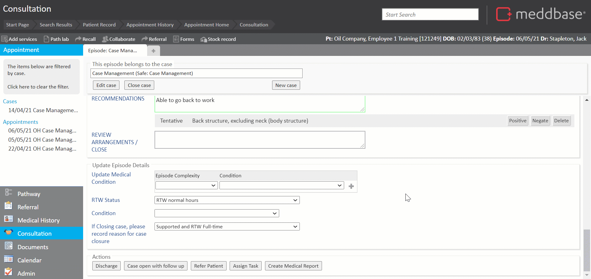
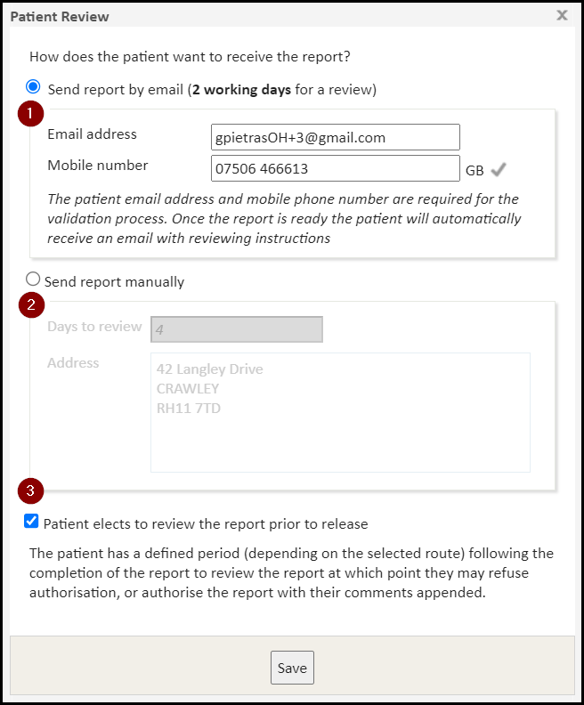
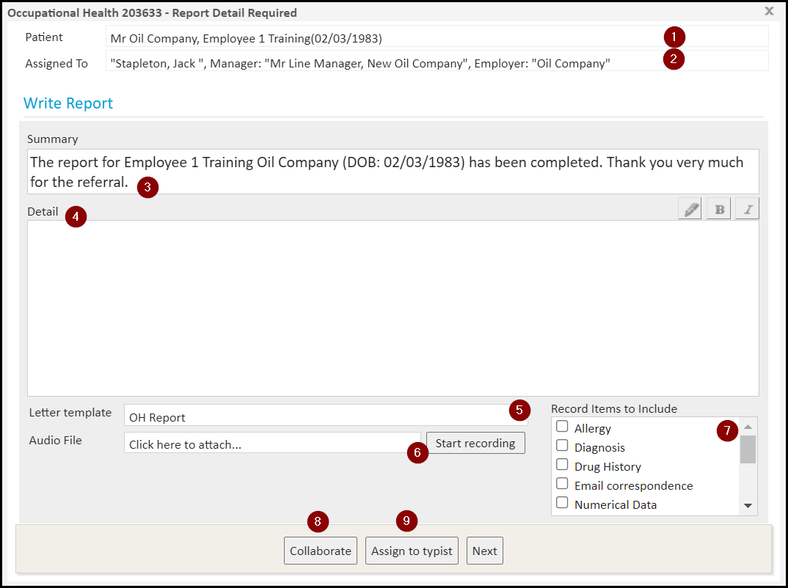
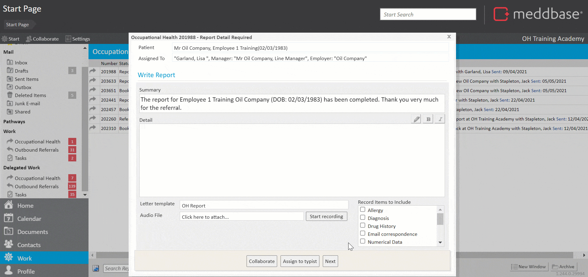
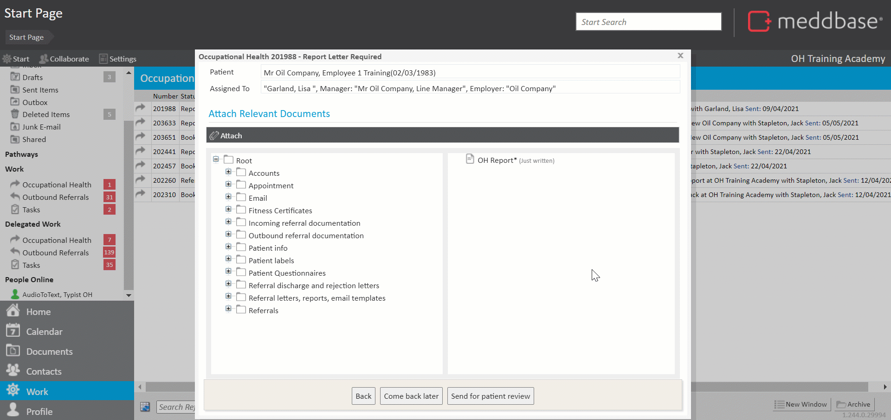
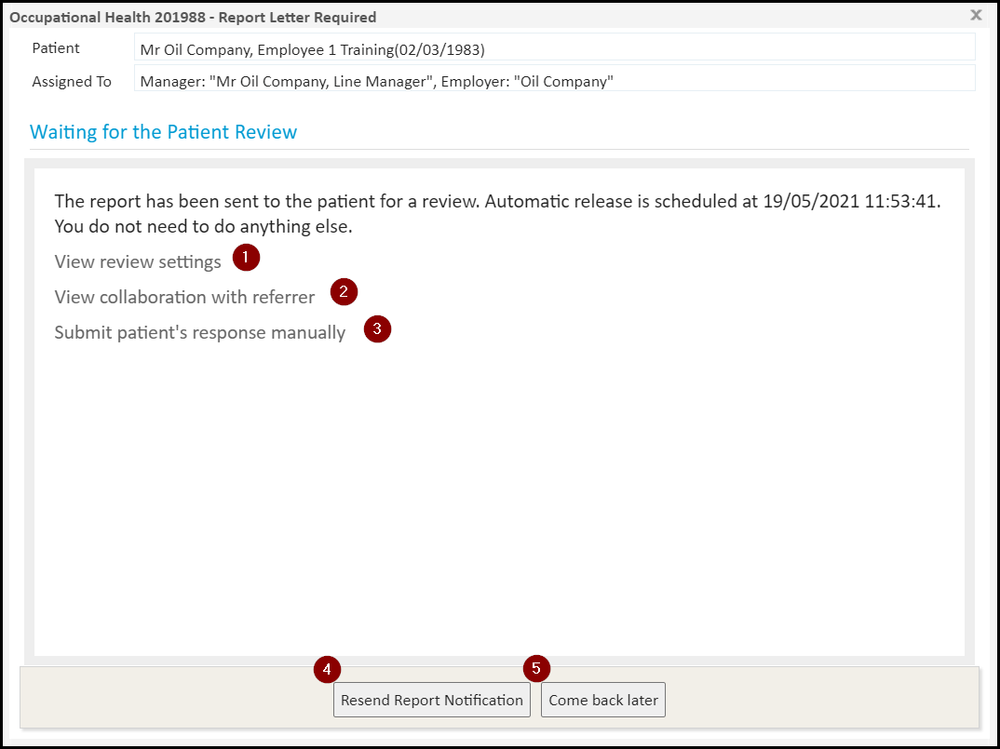

When the status of an appointment booked from an OH referral is changed to 'Discharged' (with or without a follow-up), an automatic process of writing an OH report is triggered.
Please refer to Case Management: Clinical appointment Part 2 of 3 - Occupational Health for details on conducting the consultation.
This article will walk you through the stages of writing an OH report in the Case Management workflow, following an OH appointment.
If the OH appointment does not require a follow-up in the Case Management workflow, the patient can simply be discharged. This will change the appointment status to 'Discharged' and start the OH report writing process.
To do this:
1. Navigate to the Actions section on the Clinical Form (typically found at the bottom of a form).
2. Click Discharge.

The next window displayed is the Patient Review dialogue, which allows you to:

The Days set for the patient review of the report (when sending via email or by post) can be amended. Click here for a detailed article.
Should the patient not take action within the set timeframe, the report will be released to the employer automatically.
**The patient review of the report can be skipped in this instance, or this step can be disabled for all referrals coming from a specific employer. Click here for a detailed article.
Once patient review details are confirmed, click Save.
The next window displayed is the Write Report dialogue, which allows you to:

These options only appear at this particular stage in the workflow.
**The Summary line and the **Detail section can be pre-populated with content. Click here for a detailed article.
The content of both sections will be pulled into the OH Report document generated by a template.
5. Choose the template to generate the OH report or reset the template to default.
6. Attach an audio recording with the report notes or start a new recording*.
7. Select Medical Record Items to include in the OH Report document.
8. Collaborate with individuals or groups, in an open or closed format, with or without data sharing.
9. The work item along with the audio recording can be Assigned to a typist*.
From the clinician's perspective, the report writing process would pause. Subsequently, the typist transcribes the notes and assigns the work item back to the clinician, at which point the report writing process can continue.

Once the report is ready click Next.
The next window displayed is the Attach Relevant Documents dialogue, which allows you to:-
1. Add subsequent documents to the OH Report*, either from the local machine or the patient's record.
Typically only HTML documents are useful here. To include a HTML document in the outcome report, we need to select it here from the relevant folder AND the document template needs to have the {Documents} Template Code included.
2. Come back later, thus pausing the process.
3. Send for patient review**, (requiring confirmation of patient contact details on the pop-up window)
At this stage, the patient receives an email and an SMS informing them of the OH report awaiting their review. Furthermore, the patient is informed in the email of the automatic report release dates, should they not take any action.

The last window displayed in this process is the Waiting for Patient Review dialogue, which allows you to:-
1. View and amend the patient review settings e.g. change 'Send report by email' to 'Send report manually'
2. Review the Collaboration with referrer, where you can see all the details of the referral, review related documents, change the patient review settings or re-assign the referral to a different case.
3. Submit patient's response manually, allowing Authorising or Refusing the report on behalf of the patient, provide Comments and request Changes to the report. Furthermore, you can print off the report if needed.
4. Resend Report Notification to patient's email and mobile phone.
5. Come back later and exit the work item.

The Case Management workflow continues in the Case Management: Report Authorisation - Occupational Health article.